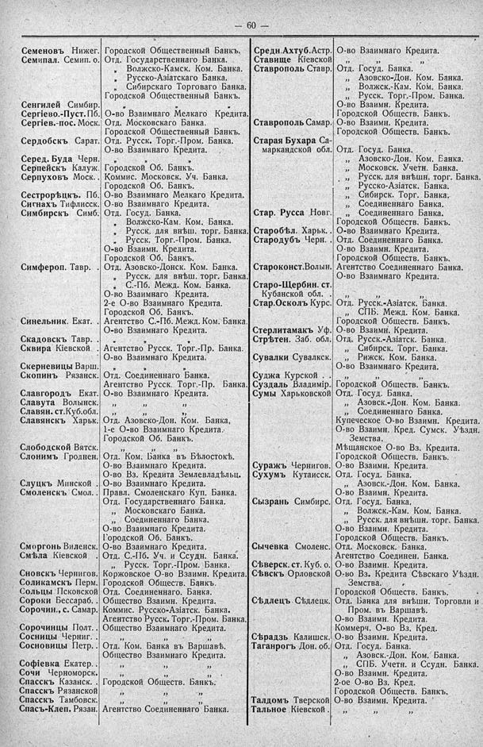

Лист источника 106
Скан

Распознанный текст
60
Семеновъ Нижег. Городской Общественный Банкъ.
Семипал. Семип. о. Отд. Государственнаго Банка.
„ Волжско-Камск. Ком. Банка.
„ Русско-Азіатскаго Банка.
„ Сибирскаго Торговаго Банка.
Городской Общественный Банкъ.
Сенгилей Симбир. „ „
Сергіево.-Пуст. Пб. О-во Взаимнаго Мелкаго Кредита.
Сергіев.-пос. Моск. Отд. Московскаго Банка.
Городской Общественный Банкъ.
Сердобскъ Сарат. Отд. Русск. Торг.-Пром. Банка.
О-во Взаимнаго Кредита.
Серед. Буда Черн. „ „ „
Серпейскъ Калуж. Городской Об. Банкъ.
Серпуховъ Моск. Коммис. Московск. Уч. Банка.
Городской Об. Банкъ.
Сестрорѣцкъ. Пб. О-во Взаимнаго Мелкаго Кредита.
Сигнахъ Тифлисск. О-во Взаимнаго Кредита.
Симбирскъ Симб. Отд. Госуд. Банка.
„ Волжско-Кам. Ком. Банка.
„ Русск. для внѣш. торг. Банка.
„ Русск. Торг.-Пром. Банка.
О-во Взаимн. Кредита.
Городской Об. Банкъ.
Симфероп. Тавр. Отд. Азовско-Донск. Ком. Банка.
„ Русск. для внѣш. торг. Банка.
„ С.-Пб. Межд. Ком. Банка.
О-во Взаимнаго Кредита.
2-е О-во Взаимнаго Кредита.
Городской Об. Банкъ.
Синельник. Екат. Агентство С.-Пб. Межд. Ком. Банка.
О-во Взаимнаго Кредита.
Скадовскъ Тавр. „ „ „
Сквира Кіевской Агентство Русск. Торг.-Пр. Банка.
О-во Взаимнаго Кредита.
Скерневицы Варш. „ „ „
Скопинъ Рязанск. Отд. Соединеннаго Банка.
Агентство Русск. Торг.-Пр. Банка.
Славгородъ Екат. О-во Взаимнаго Кредита.
Славута Волынск. „ „ „
Славян. ст. Куб. обл. „ „ „
Славянскъ Харьк. Отд. Азовско-Дон. Ком. Банка,
1-е О-во Взаимнаго Кредита.
Городской Об. Банкъ.
Слободской Вятск. „ „ „
Слонимъ Гроднен. Отд. Ком. Банка въ Бѣлостокѣ.
О-во Взаимнаго Кредита.
О-во Вз. Кредита Землевладѣльц.
Слуцкъ Минской О-во Взаимнаго Кредита.
Смоленскъ Смол. Правл. Смоленскаго Куп. Банка.
Отд. Государственнаго Банка.
„ Московскаго Банка.
„ Соединеннаго Банка.
О-во Взаимнаго Кредита.
Городской Об. Банкъ.
Сморгонь Виленск. О-во Взаимнаго Кредита.
Смѣла Кіевской Отд. С.-Пб. Уч. и Ссудн. Банка.
„ Русск. Торг.-Пром. Банка.
Сновскъ Чернигов. Коржовское О-во Взаимн. Кредита.
Соликамскъ Перм. Городской Обществ. Банкъ.
Сольцы Псковской Отд. Соединеннаго. Банка.
Сороки Бессараб. Общество Взаимн. Кредита.
Сорочин., с. Самар. Коммис. Русско-Азіатск. Банка.
Агентство Русск. Торг.-Пром. Банка.
Сорочинцы Полт. Общество Взаимнаго Кредита.
Сосницы Черниг. „ „ „
Сосновицы Петр. Отд. Ком. Банка въ Варшавѣ.
Общество Взаимнаго Кредита.
Софіевка Екатер. „ „ „
Сочи Черноморск. „ „ „
Спасскъ Казанск. Городской Обществ. Банкъ.
Спасскъ Рязанской „ „ „
Спасскъ Тамбовск. „ „ „
Спасъ-Клеп. Рязан. Агентство Соединеннаго Банка.
Средн. Ахтуб. Астр. О-во Взаимнаго Кредита.
Ставище Кіевской „ „ „
Ставрополь Ставр. Отд. Госуд. Банка.
„ Азовско-Дон. Ком. Банка.
„ Волжск.-Кам. Ком. Банка.
„ Русск. Торг.-Пром. Банка.
О-во Взаимн. Кредита.
Городской Обществ. Банкъ.
Ставрополь Самар. О-во Взаимн. Кредита.
Городской Обществ. Банкъ.
Старая Бухара Са-
маркандской обл. Отд. Госуд. Банка.
„ Азовско-Дон. Ком. Банка.
„ Московск. Учетн. Банка.
„ Русск. для внѣшн. торг. Банка.
„ Русско-Азіатск. Банка.
„ Сибирск. Торг. Банка.
„ Соединеннаго Банка.
Стар. Русса Новг. „ Соединеннаго Банка.
Городской Обществ. Банкъ.
Старобѣл. Харьк. О-во Взаимнаго Кредита.
Стародубъ Черн. Отд. Соединеннаго Банка.
О-во Взаимн. Кредита.
Городской Обществ. Банкъ.
Староконст. Волын. Агентство Соединеннаго Банка.
О-во Взаимнаго Кредита.
Старо-Щербин. ст.
Кубанской обл. „ „ „
Стар. Осколъ Курс. Отд. Русск.-Азіатск. Банка.
„ СПБ. Межд. Ком. Банка.
Городской Обществ. Банкъ.
Стерлитамакъ Уф. О-во Взаимн. Кредита.
Стрѣтен. Заб. обл. Отд. Русск.-Азіатск. Банка.
„ Сибирск. Торг. Банка.
Сувалки Сувалкск. „ Рижск. Ком. Банка.
О-во Взаимнаго Кредита.
Суджа Курской . „ „ „
Суздаль Владимір. Городской Обществ. Банкъ.
Сумы Харьковской Отд. Госуд. Банка.
„ Азовск.-Дон. Ком. Банка.
„ Соединеннаго Банка.
Купеческое О-во Взаимн. Кредита.
О-во Взаимн. Кред. Сумск. Уѣздн.
Земства.
Мѣщанское О-во Вз. Кредита.
Городской Обществ. Банкъ.
Суражъ Чернигов. О-во Взаимн. Кредита.
Сухумъ Кутаисск. Отд. Госуд. Банка.
„ Азовск.-Дон. Ком. Банка.
О-во Взаимн. Кредита.
Сызрань Симбирс. Отд. Госуд. Банка.
„ Волжск.-Кам. Ком. Банка.
„ Русск. для внѣшн. торг. Банка.
О-во Взаимн. Кредита.
Городской Обществ. Банкъ.
Сычевка Смоленс. Отд. Московск. Банка.
Агентство Соединен. Банка.
Сѣверск. ст. Куб. о. О-во Взаимн. Кредита.
Сѣвскъ Орловской О-во Вз. Кредита Сѣвскаго Уѣздн.
Земства.
Городской Обществ. Банкъ.
Сѣдлецъ Сѣдлецк. Отд. Банка для внѣшн. Торговли и
Пром. въ Варшавѣ.
О-во Взаимн. Кредита.
Коммерч. О-во Вз. Кред.
Сѣрадзь Калишск. О-во Взаимн. Кредита.
Таганрогъ Дон. об. Отд. Госуд. Банка.
„ Азовск.-Дон. Ком. Банка.
„ СПБ. Учетн. и Ссудн. Банка.
О-во Взаимн. Кредита.
2-ое О-во Вз. Кред.
Городской Обществ. Банкъ.
Талдомъ Тверской О-во Взаимн. Кредита.
Тальное Кіевской . „ „ „